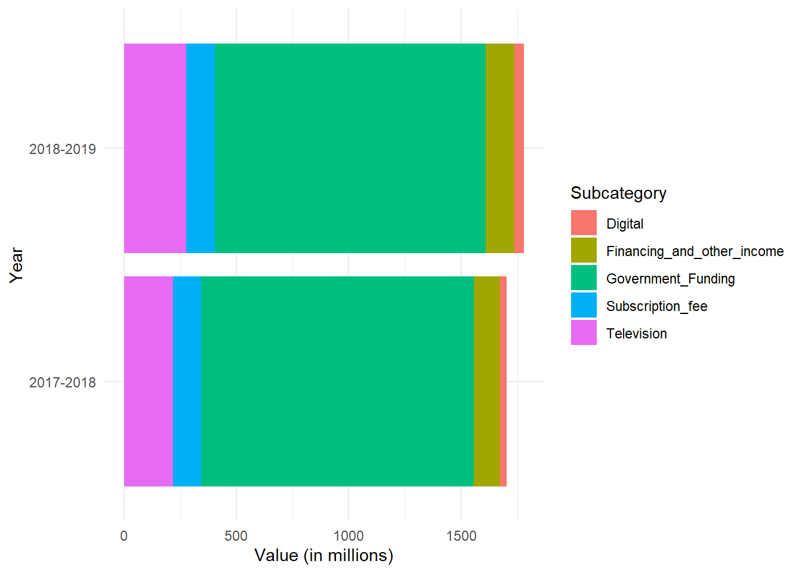
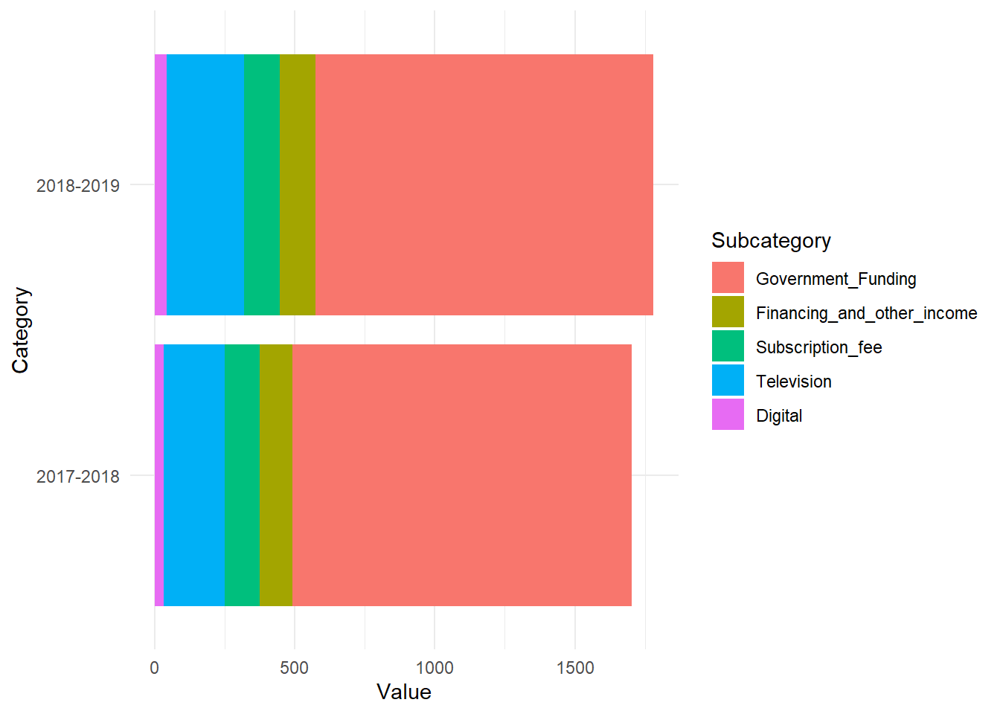

This is an R Markdown document. Markdown is a simple formatting syntax for authoring HTML, PDF, and MS Word documents. For more details on using R Markdown see http://rmarkdown.rstudio.com.
When you click the Knit button a document will be generated that includes both content as well as the output of any embedded R code chunks within the document. You can embed an R code chunk like this:
# Load necessary librarieslibrary(ggplot2)
Warning: package 'ggplot2' was built under R version 4.3.3
# Create example datadata <-data.frame(Category =c("2017-2018", "2018-2019"),Total =c(1780.8, 1703.8),Government_Funding =c(1213.7, 1207.7),Revenue =c(490.1, 573.1),Financing_and_other_income =c(116.9, 127.6),Subscription_fee =c(124.4, 127.2),Advertising =c(248.8, 275.7),Digital =c(31.0, 42.6),Television =c(217.8, 275.7))# Reshape the datadata_long <- tidyr::pivot_longer(data, cols =c(Government_Funding,Financing_and_other_income, Subscription_fee,Digital, Television), names_to ="Subcategory", values_to ="Value")# Plotggplot(data_long, aes(x = Category, y = Value, fill = Subcategory)) +geom_bar(stat ="identity", position ="stack") +coord_flip() +# Flip the coordinates for horizontal barsgeom_bar(data = data, aes(x = Category, y = Total), stat ="identity", fill ="transparent") +theme_minimal()+labs(y ="Value (in millions)", x ="Year")

library(ggplot2)# Create example datadata <-data.frame(Category =c("2017-2018", "2018-2019"),Total =c(1780.8, 1703.8),Government_Funding =c(1213.7, 1207.7),Revenue =c(490.1, 573.1),Financing_and_other_income =c(116.9, 127.6),Subscription_fee =c(124.4, 127.2),Advertising =c(248.8, 275.7),Digital =c(31.0, 42.6),Television =c(217.8, 275.7))# Reshape the datadata_long <- tidyr::pivot_longer(data, cols =c(Government_Funding, Financing_and_other_income, Subscription_fee, Digital, Television), names_to ="Subcategory", values_to ="Value")# Determine the order of stackingstacking_order <-c("Government_Funding", "Financing_and_other_income", "Subscription_fee", "Television", "Digital")# Convert Subcategory to factor and set levels according to stacking orderdata_long$Subcategory <-factor(data_long$Subcategory, levels = stacking_order)# Plotggplot(data_long, aes(x = Category, y = Value, fill = Subcategory)) +geom_bar(stat ="identity", position ="stack") +coord_flip() +# Flip the coordinates for horizontal barsgeom_bar(data = data, aes(x = Category, y = Total), stat ="identity", fill ="transparent") +theme_minimal()

library(ggplot2)library(plotly)
Warning: package 'plotly' was built under R version 4.3.3
Attaching package: 'plotly'
The following object is masked from 'package:ggplot2':
last_plot
The following object is masked from 'package:stats':
filter
The following object is masked from 'package:graphics':
layout